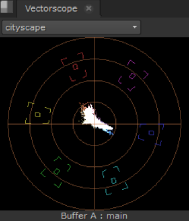
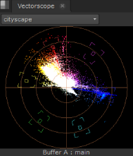

The Vector scope displays color, saturation, and hue information for the current frame. Similar to color wheels, Vector scopes display information radially, from the center outward. The farther from the center the data spans, the more saturation is represented.
In the image on the left, you can see that the frame represented contains mostly yellows and reds, but the values are not oversaturated. The image on the right represents a badly saturated frame. Notice the spill of red traces distributed toward the edge of the scope pass the target (the highlighted square).
|
 |
 |
| Normal saturation. | High Saturation. |
TIP: You can pan the view area by holding Alt, or the middle mouse button, and dragging in the panel.
There is also a Viewer selection control and Current View label on the Vectorscope tab:
• Viewer selection - if you have multiple Viewers open, use the dropdown menu to associate Vector scope output to the required clip.
The default value, Active Viewer, automatically displays details on the last Viewer you selected.
• Current View - describes the view currently displayed in the scope, whether it's the A or B buffer and the view. The view defaults to main, unless main has been replaced in multi-view scripts or projects.
Depending on which Viewer tools and views you have active, you can have up to four scopes displayed at once.
For example, with two stereo Read nodes, one in each input buffer, and wipe and Side by Side active, the scopes display something like this:
|
|